Полные тексты, а не обрывки
Каждая книга — произведение целиком, разбитое на главы. Никаких «глава 1 из 3», демо-заглушек и кусков из превью магазина.
WayBooks — читалка без подписки, без облака и без рекламы: 103 полных текста уже лежат внутри приложения, а свои книги можно докинуть файлами. Всё работает в самолёте, в метро и в горах.
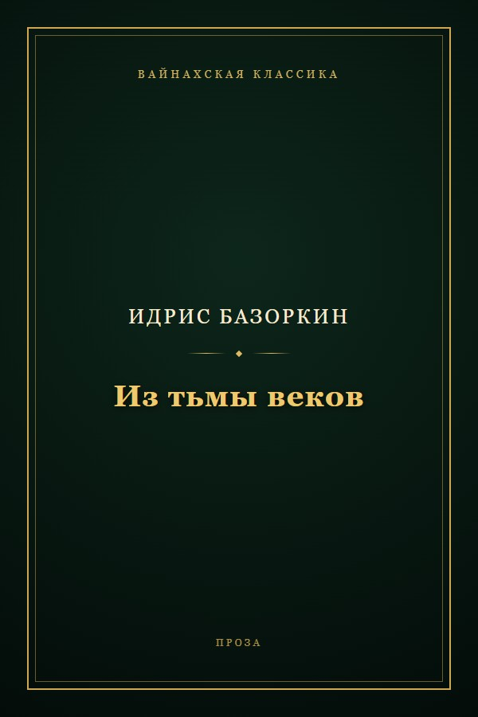
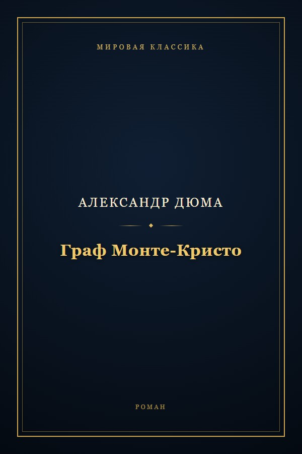

Не «ещё одна читалка», а конкретные вещи, которые видно при первом же открытии.
Каждая книга — произведение целиком, разбитое на главы. Никаких «глава 1 из 3», демо-заглушек и кусков из превью магазина.
Ни одного запроса наружу во время чтения. Библиотека, прогресс, закладки и настройки живут в памяти телефона.
Файл добавляется прямо в приложение — с оглавлением, обложкой и автором там, где они есть в формате. Прогресс по импортированным книгам сохраняется.
У каждой книги — собственная векторная обложка в едином стиле: орнамент по жанру, золотая рамка, название целиком внутри рамки. Полка выглядит полкой, а не свалкой превью.
Светлая, сепия, тёмная и чёрная. Кегль в пунктах, гарнитура, межстрочный интервал и поля — настраиваются и запоминаются для каждой книги отдельно.
«Стр. 42 из 318» считается по реально свёрстанным полосам, а не по среднему арифметическому. Закладки и оглавление — в один тап. Заметка рождается из текста: держишь палец на фразе, тянешь на соседние предложения — цитата ложится в заметки книги уже с привязкой к месту.
Три жанра, 9 подкатегорий, от русской и вайнахской классики до шедевров зарубежной литературы.
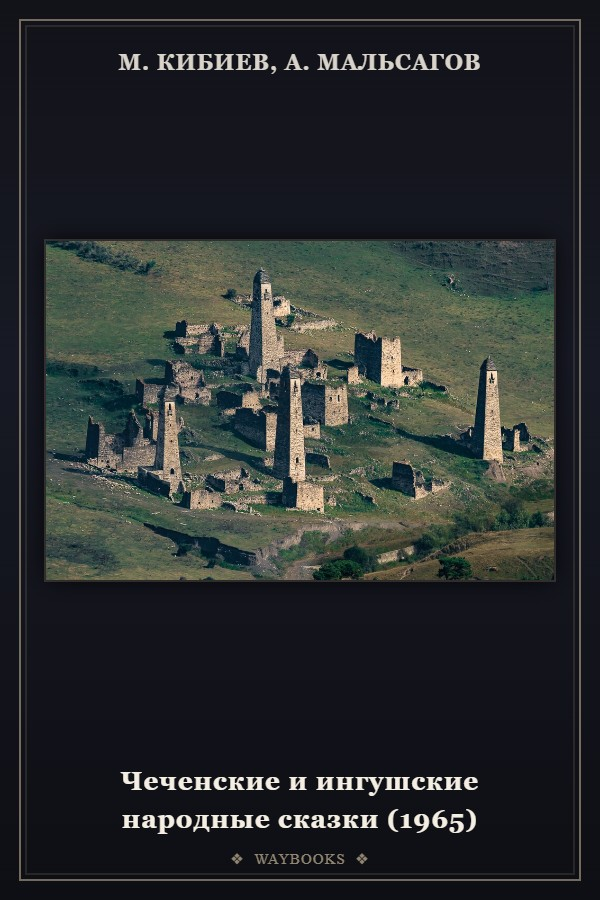
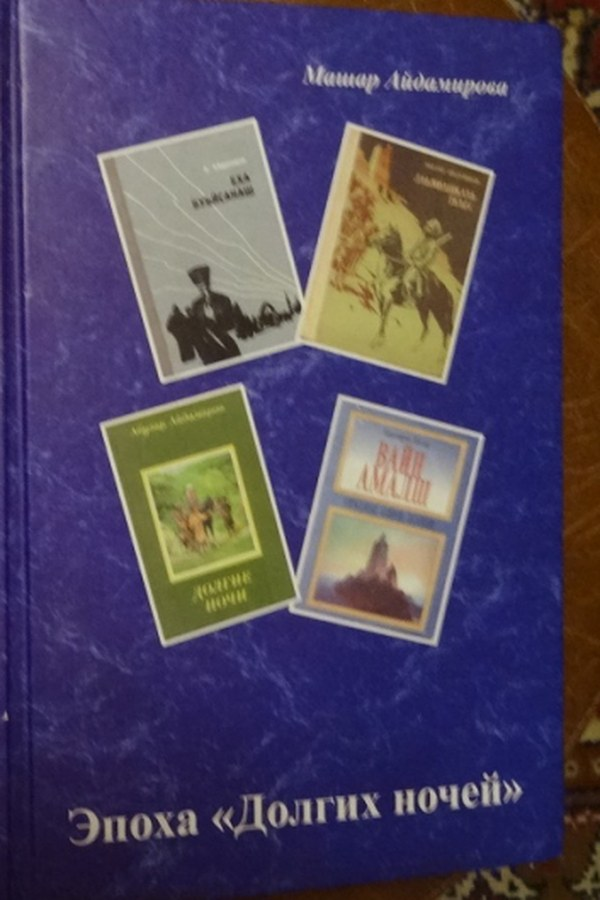
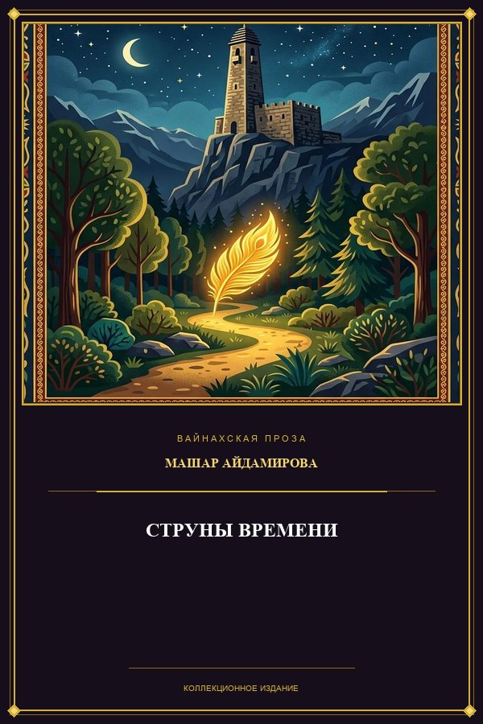
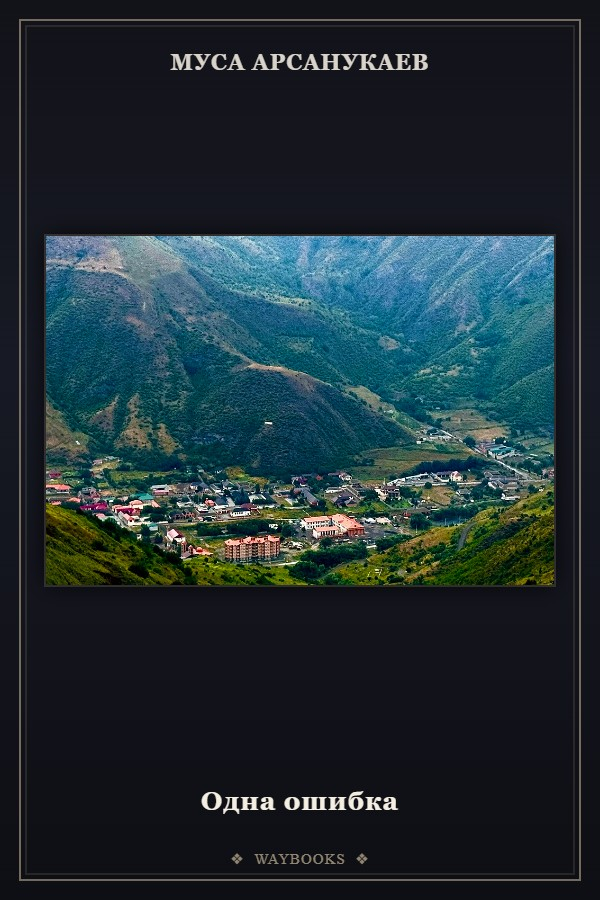
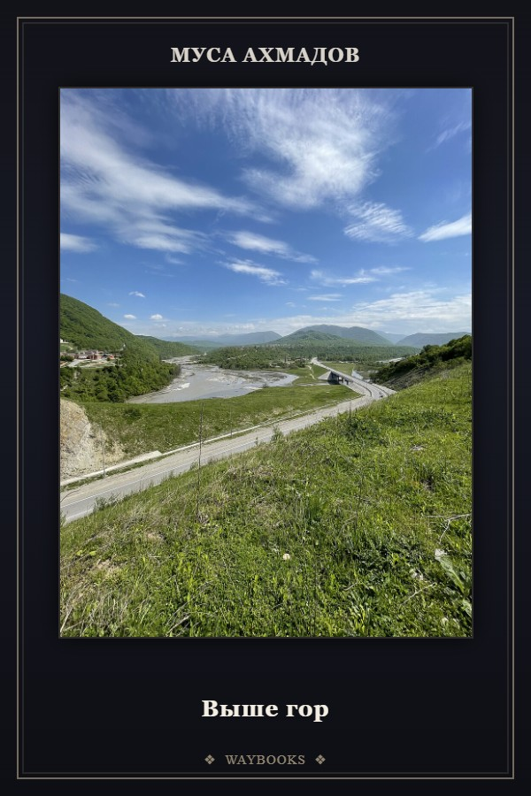
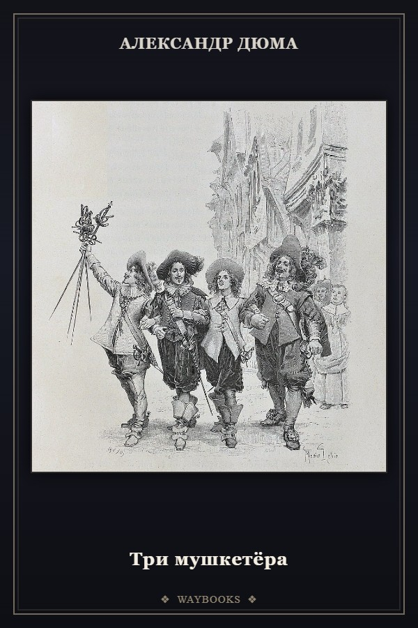
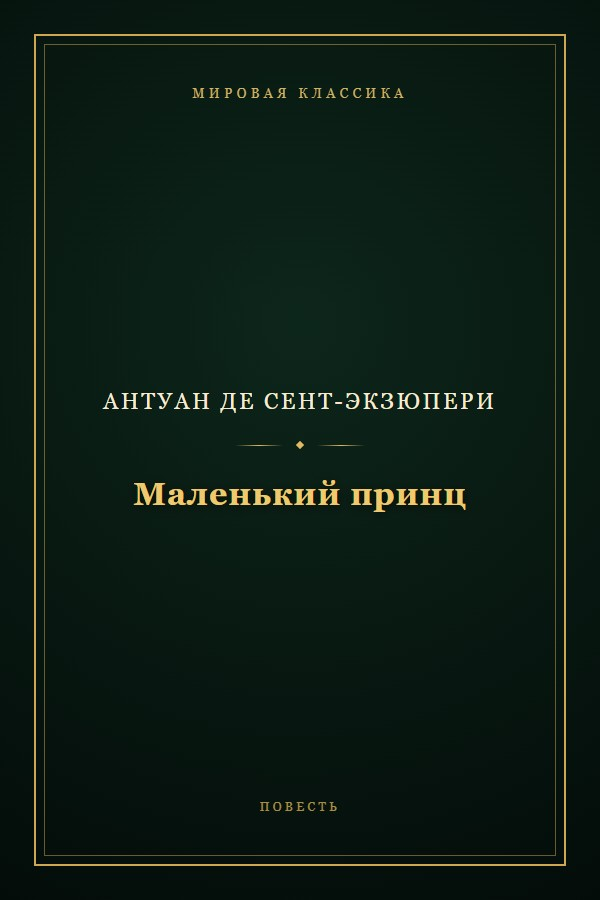
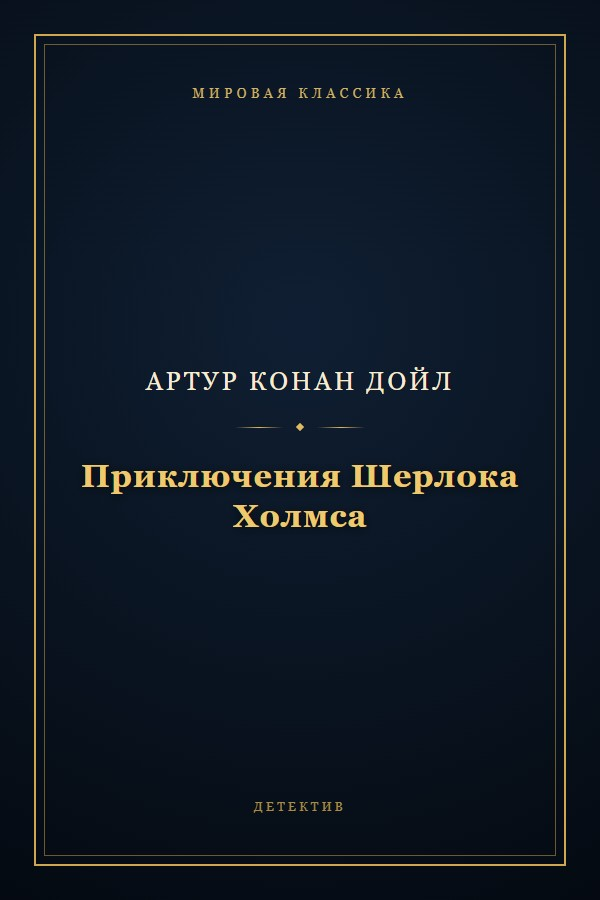
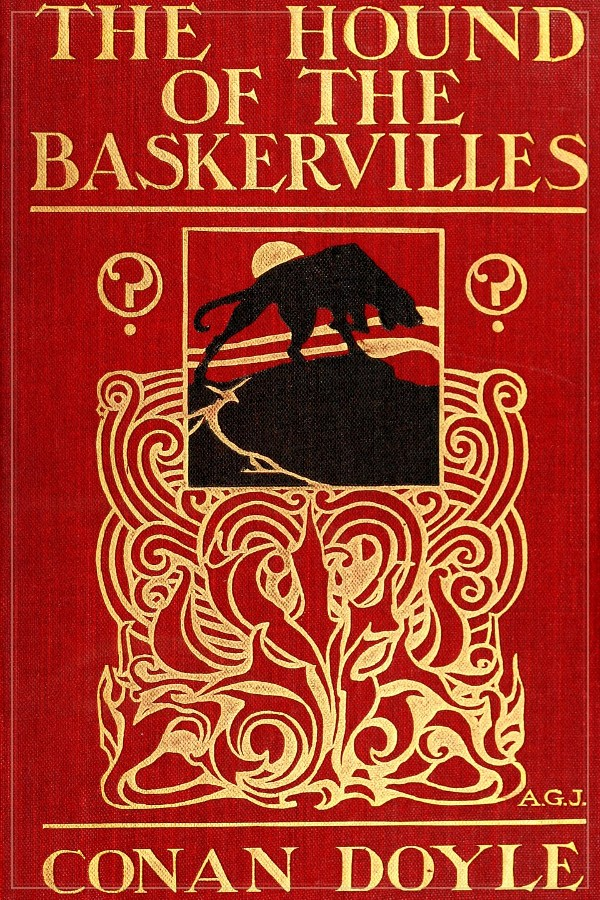
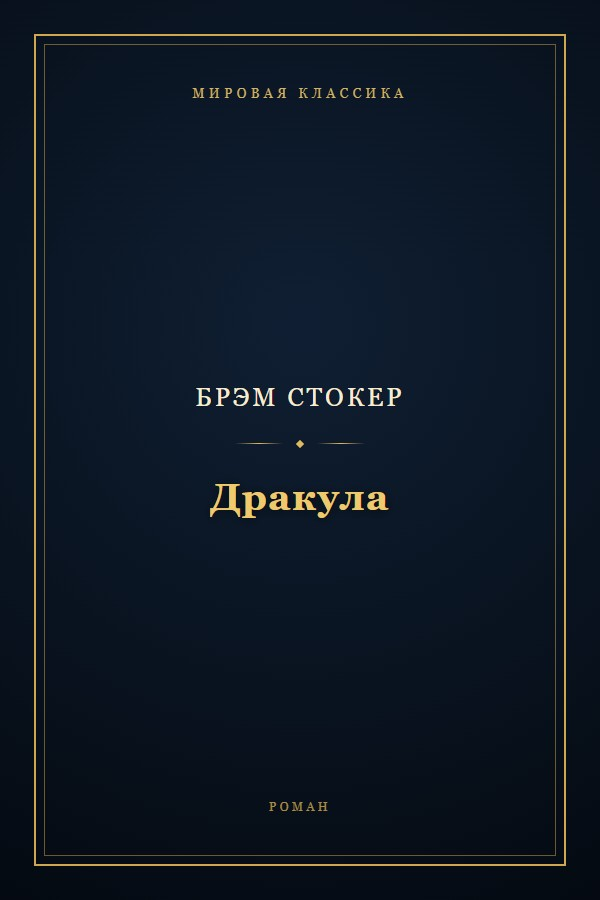
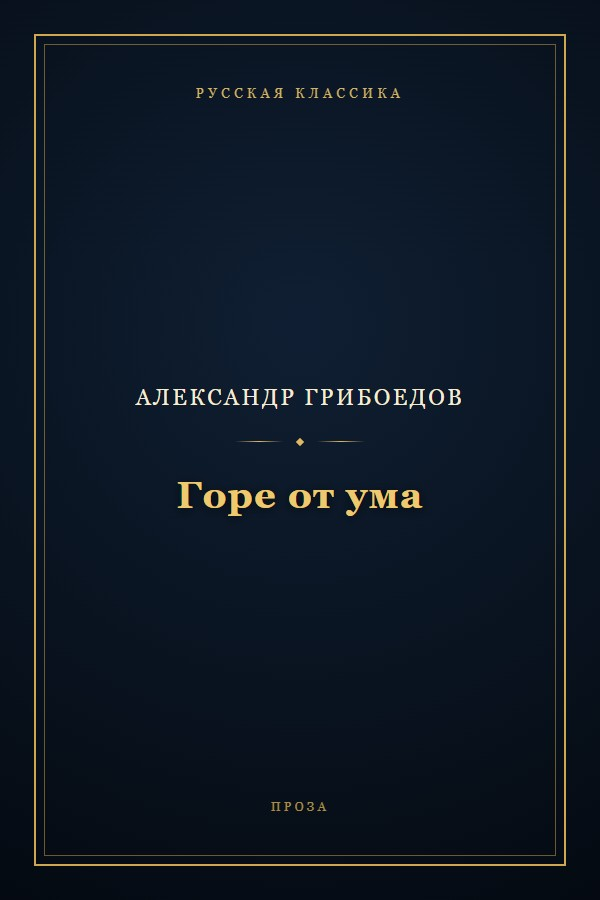
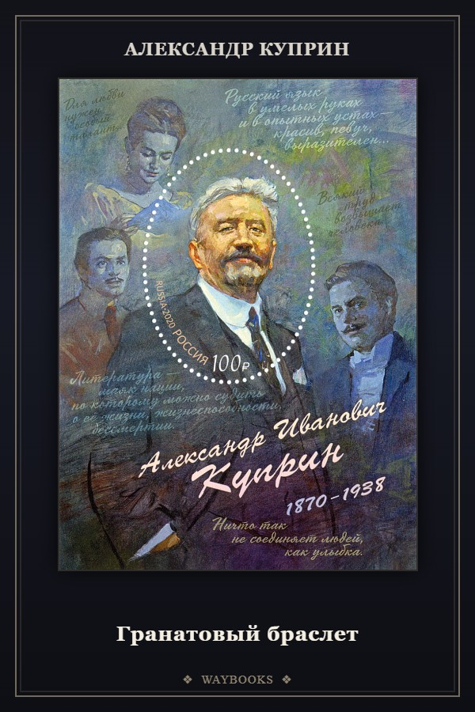
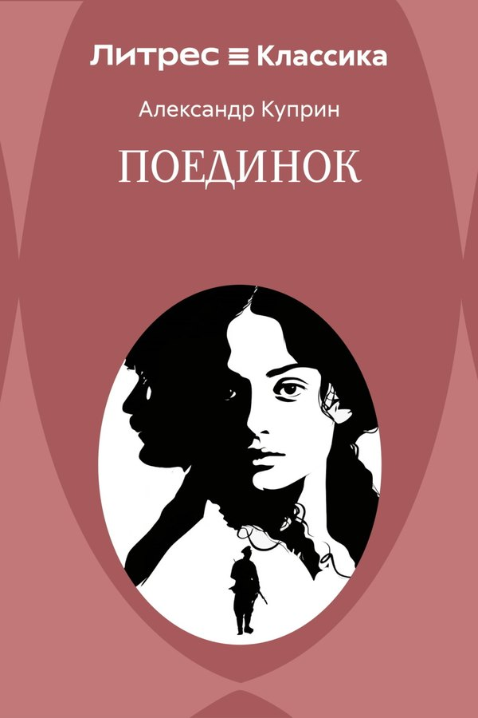
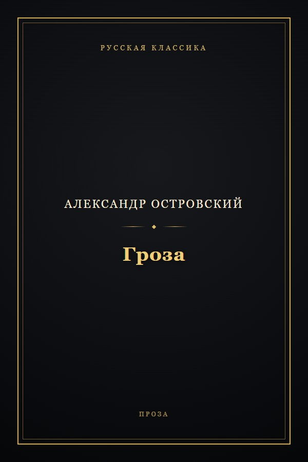
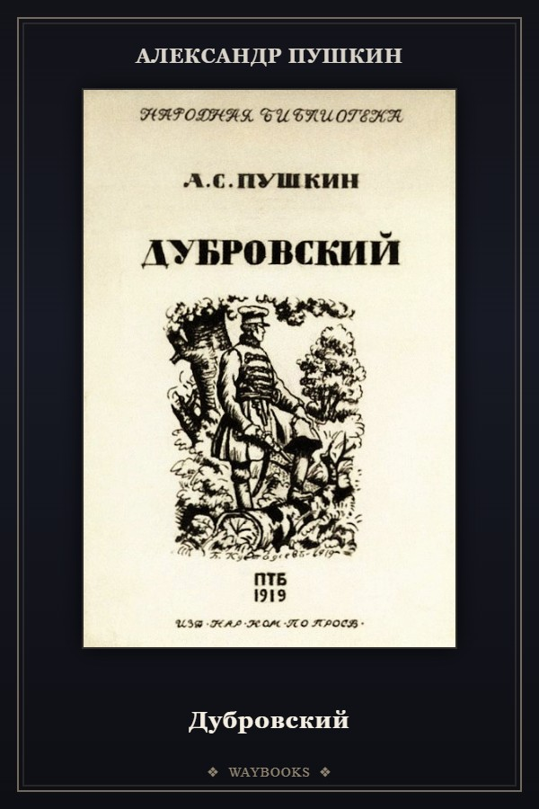
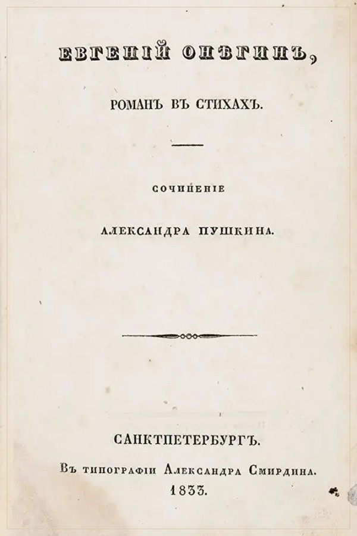
Обложки на этой полке — настоящие, из приложения. Их рисует сборщик библиотеки, поэтому они не кончаются там, где у магазина закончились превью.
Приложение живёт в RuStore: оттуда ставится и оттуда же обновляется.
Кнопка вверху ведёт в WayBooks в RuStore. Там же приложение находится поиском по «WayBooks».
Магазин скачает приложение сам — никаких предупреждений о файле из сторонней раздачи и лишних разрешений не будет.
Библиотека соберётся при первом старте: 103 книг, офлайн, без регистрации и аккаунта.
То, что спрашивают чаще всего.
Нужен, чтобы один раз скачать приложение из RuStore. Дальше оно не делает ни одного запроса: тексты, обложки и настройки лежат внутри. Проверено — во время чтения наружу не уходит ничего.
Да. Встроенная библиотека собирается из текстов, а не из описаний: у каждого произведения есть все главы, а издательский аппарат — примечания, послесловия, колонтитулы, списки литературы — вырезается. Если текст приходит битым (плохая оцифровка, дубль другой книги, список уроков вместо текста), сборщик такую книгу просто не выпускает.
Нет. RuStore ставит новую версию поверх той же подписью, база приложения остаётся на месте. Если в новой сборке поменялся текст книги, она перечитывается по контрольной сумме, а место чтения сохраняется там, где позволяет разбивка.
Раньше APK лежал на сайте, но это лишние шаги для читателя: файл надо ещё разрешить поставить, а Android предупреждает о неизвестном источнике. Магазин проверяет подпись, ставит приложение как обычное и сам приносит обновления — поэтому раздачу файлов мы убрали.
Можно: EPUB, FB2, PDF и обычный TXT добавляются прямо в приложении, попадают на полку «Добавленные книги» и читаются так же, как встроенные — с оглавлением, темой и сохранением позиции.
Установка весит 32.3 МБ, и почти весь объём — тексты и обложки библиотеки. После установки книги лежат в памяти приложения; на телефоне с 2 ГБ свободного места хватает с запасом.
Нет, и это осознанно: читалка офлайн, без аккаунтов и облаков. Свои файлы можно перенести вручную, встроенная библиотека есть в каждой копии приложения.